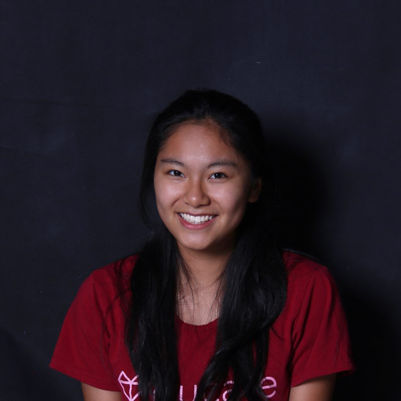
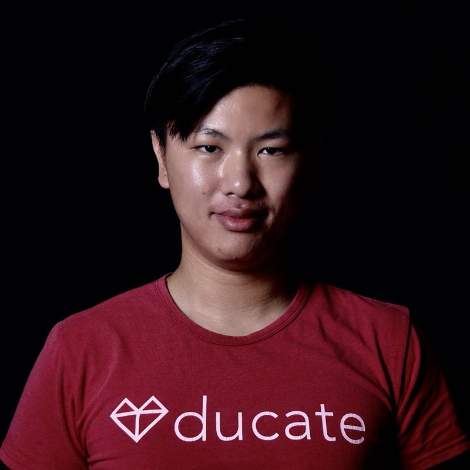
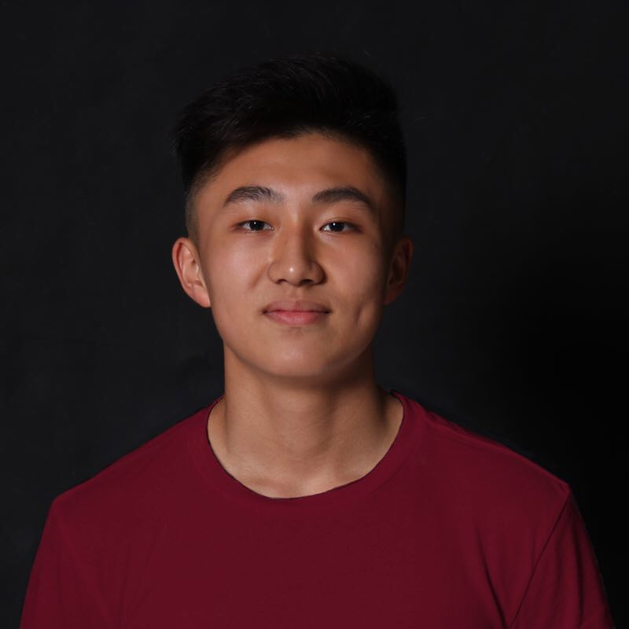
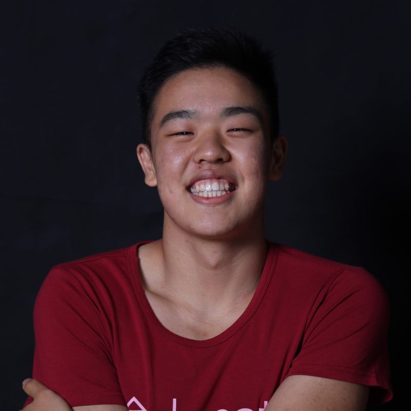
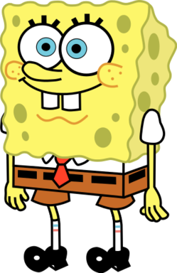

Home
About Us
Our Story
Our Events & Projects
EYE News
Media
“No one has ever become poor by giving.” -Anne Frank
Subscribe
SIGN UP
About Us
Executives
Members
Constitution
Bridget Lu
Founder & President
Rachel Hsu
Vice President

Annika Wang
Treasurer
Jenny Lee
Secretary
Dorothy Li
Public Relations Officer

Alex Zhang
Austin Liu
Chu Chuan Wu

Eric Yao
Erin Epp
Gloria Liu
Henry Jin
Katie Li
Kyle Liang
Noah Lichtenberg
Rosemary Geib
Sabrina Zhong

Tommy Xu
Yanni Sim

Name
Name
Name
Name
Name
Name
Name
Name
TEAM PICTURE
PARTNERS
Eye Love Vision Fund • 看见爱视光基金
Safe Kids China • 全国儿童安全组织